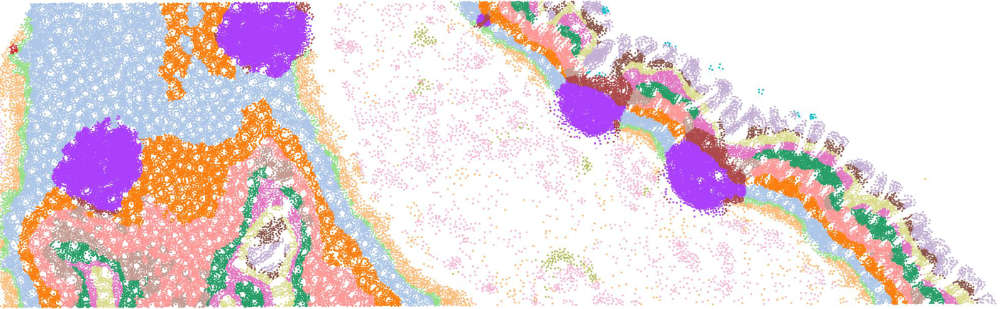

Cross-Modal Knowledge Distillation from Spatial Transcriptomics to Histology
CVPR Workshop 2026
A knowledge-distillation method that transfers information from spatial transcriptomics to histology, enabling the recovery of tissue organization from histology alone in regions without spatial transcriptomics measurements.